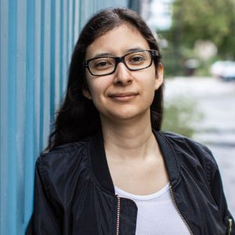

|  | Ariel Abrego GaitanScénariste Ariel Abrego Gaitan est une scénariste canadienne d'origine latino-américaine. En 2017, elle commence à travailler pour la maison de production Chaska Films où elle produit et écrit les webséries Exiliados et Petites Histoires dans la Ville. Présentement, elle travaille sur les longs-métrages Alejandra et 34 cm au sol. |
| Dates | Rôles | Projets |
|---|---|---|
| 2021-2022 | Productrice et scénariste | Websérie Petites Histoires dans la Ville |
| 2020-2021 | Directrice de production | Chaîne Youtube Chaska Web TV |
| Microsoft Word | ⭐️⭐️⭐️⭐️ |
| Adobe Premiere | ⭐️⭐️⭐️⭐️ |
| Adobe Photoshop | ⭐️⭐️⭐️ |